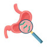

H.Pylori
سه دارویی:
1.Cap Omeprazole 20mg N=28 q12h
2.Tab Clarithromycin 500mg N=28 q12h
Or Tab Metronidazole 500mg N=28 q12h
3.Cap Amoxicillin 500mg N=56 2tab q12h
چهاردارویی:
Rx
1.Cap Omeprazole 20mg N=28 q12h
2.Tab Bismuth subcitrate N=56 q6h
3.Cap Amoxicillin 500mg N=56 2tab q12h
4.Tab Metronidazole 500mg N=28 q12h
خط دوم:
Rx
1.Cap Amoxicillin 500mg N=56 2tab bd
2. Cap Esomeprazole 40mg N=28 bd
3.Cap Levofloxacin 500mg N=28 bd
نکته1: بهتره از ابتدا درمان 4دارویی شروع بشه
نکته2: درصورت شکست از خط دوم درمان استفاده کنید.
نکته3:برای تایید درمان از تست سرولوژی استفاده نکنید.
نکته4: اگر اندیکاسیون اندوسکوپی دارد ارجاع بدید.
B Group : Amoxicillin, Metronidazole,
C Group: Clarithromycin, Omeprazole, Levofloxacin, Bismuth
1️⃣ گاستریت حاد و مزمن
Atrophic Gastritis 2️⃣
Stress-Induced Gastritis 3️⃣
4️⃣ سرطان معده
5️⃣ گاسترینوما
GERD 6️⃣
PUD 7️⃣
Non-Hodgkin Lymphoma (NHL) 8️⃣
تصویری برای این نسخه موجود نیست.